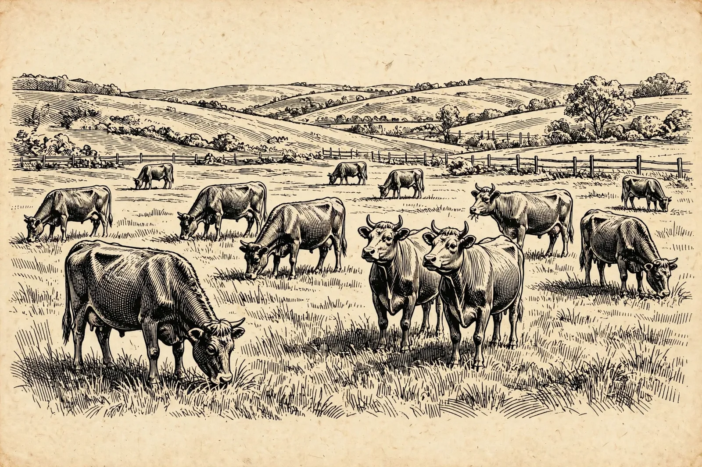

Our correspondents in the field. Live, unbothered, and entirely uninterested in your term sheet.

THE HERD, AT GRAZE — Twelve head. The two in the centre have seen your pitch deck. (Staff engraving)
| Observation | Reading |
|---|---|
| Heads down, eating | Normal market. Capital is chewing. |
| Heads up, staring | A new thesis has been spotted on the horizon. |
| All heads turn the same way at once | Stampede imminent. See Trends. |
| The field is empty | Everyone exited. See The Exit Door. |
| One cow stands apart, alone | Contrarian. Either early or wrong; the archive will decide. See Thesis Archaeology. |
The Herd is the control group for everything else on this site. The rounds, the funds, the stampedes into AI and out of cannabis — all of it is what the herd does when it stops grazing and starts running. The cows above have never raised a round, never missed payroll, and have correctly ignored every bubble since 2014 by the simple expedient of eating grass. We check on them weekly. They have never once checked on us.
No cows were consulted in the making of this publication. The masthead cow is proprietary. Please do not feed the investors.